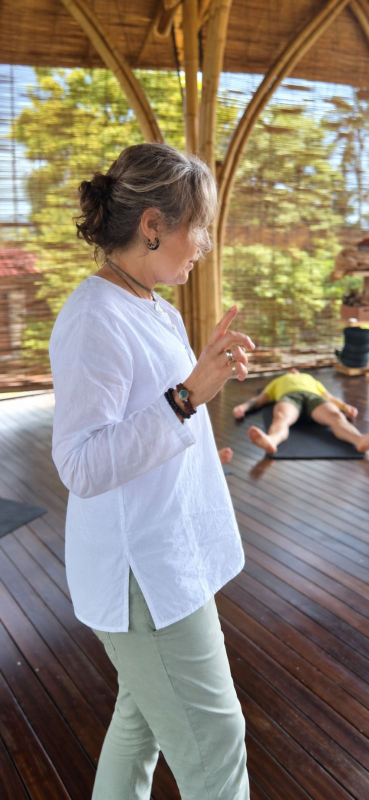
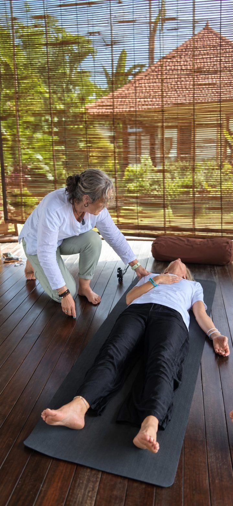

HypnoBreathWork
HypnoBreathWork: a somatic approach to overcoming anxiety.
HypnoBreathWork is a personal journey, deliberately using the breath to access what the subconscious is ready to release. As unconscious patterns surface, they are often experienced somatically — as though crystallised within the body through years of protection — allowing the breath to soften what the mind alone could never think its way out of.

What is HypnoBreathWork?
Breathwork and hypnotherapy are each powerful on their own. Breathwork is an ancient practice that works with the body directly — building CO2 tolerance, calming the stress response, and supporting health at a cellular level. For anyone learning how to overcome anxiety, the breath is often the fastest doorway back into a regulated body.
Hypnotherapy helps you access the subconscious mind, where automatic thoughts, habits and emotional patterns are stored. Working at this deeper level may help you release limiting beliefs, reduce stress and anxiety, build confidence, overcome fears, improve sleep and break unwanted habits — supporting transformation from the inside out, rather than simply managing symptoms.
Combined, they create a profound somatic experience — accessing and releasing stored or blocked emotional energy at the root level for lasting change.
The somatic release will likely have you feeling lighter at the end of a session.

Anxiety, stress and the body
Chronic anxiety doesn’t just live in your thoughts — it lives in your body. Tension, shallow breathing, disrupted sleep, emotional eating and stress-related habits are often the body’s way of coping. Many women exploring the link between stress and eating patterns find that when the nervous system settles, the body follows. HypnoBreathWork works with the body, not against it.
HypnoBreathWork FAQs
What to expect
Whether in hypnotherapy or breathwork, you are always in control. The key is to stay open and experience whatever arises as an observer. This is a somatic experience — you may feel energy wanting to shift in your body. That’s the goal. You’ll be gently guided in and out, with time afterwards to discuss and integrate your experience.
Hypnotherapy may offer a supportive and gentle way to explore the emotional roots of trauma and anxiety. In a relaxed state, you may access subconscious patterns that influence how you respond to stress or triggers. Some people report emotional clarity, reduced tension, or a deeper sense of calm after sessions.
No. You don’t have to relive a traumatic experience to change the way it continues to affect you.
We are not just one part. We are made up of many parts, shaped by our experiences, beliefs and the ways we have learned to protect ourselves. Sometimes, one part of you is ready to move forward, while another is still responding from what it learned in the past.
My role is not to make you relive what happened. It is to help you observe what is already happening within you — without judgement — so you can recognise the patterns, responses and beliefs that may have been operating outside of your awareness.
From that awareness, we can begin to create a new response and move towards the experience you want to have.
Let’s talk
Ready to stop living in survival mode?
A free 20-minute call — no pressure, no obligation. Just a conversation to see if this approach aligns with your goals.
Book your free consult